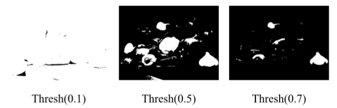
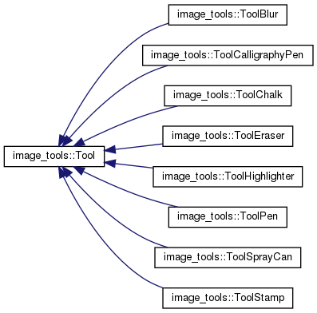

Image Editor Applications Flashphoto and MIADocumentation written by Connor Hanlon Codebase Written By: Professor Keefe, TAs of 3081, and Connor Hanlon In this article, the basic applications Flashphoto and MIA are introduced with sections describing how to get started. For developers, the codebase is described in later sections of the article. If you are a user and would like some help getting started, you can follow these links: "Getting Started with Flashphoto" and "Getting Started with MIA". If you are a developer and would like to contribute to the project, please follow this link: "For Developers" Getting Started with FlashphotoFor help starting Flashphoto, see the section "Starting Flashphoto". For help using a feature such as a tool or a filter, please see "How to use filters and tools for Flashphoto and for additional features such as loading and saving, see "Additional Flashphoto Features". Starting FlashphotoOpen a terminal, command prompt, or bash. Change your directory into the "PROJ" directory where the program is located, and type in How to use filters and tools for FlashphotoThere are 7 tools provided for Flashphoto app as listed below. To see what each tool does, click on the desired tool below. Most descriptions credited to the TAs and Professors of CSCI 3081. Each tool can be chosen by selecting the desired tool in the pop-up window inside of the Flashphoto application. The color can be chosesn for each by clicking on the bar immediately beneath the description "Tool Color" in the pop-up menu.
Before the blur tool is applied.
After the blur tool is applied.
The blur tool reduces the sharpness of the image in the area of application of the tool. In order to use this tool, selected the "Blur" button on the GUI as shown above. 
This tool is designed to look like a calligraphy pen. It works almost the same way as the Pen tool. Like the Pen tool, it is completely opaque and it covers up any “paint” that was already applied to the canvas. However, the difference with the Calligraphy Pen is applied tool is an oval tilted at a 30-degree angle. In order to use this tool, selected the "Calligraphy Pen" button on the GUI as shown above. This tool is designed to look like a piece of chalk dragged across a bumpy surface. In order to use this tool, selected the "Chalk" button on the GUI as shown above.
Before the eraser is applied.
After the erasor is applied.
This tool erases the digital canvas and returns it to its original background color. In order to use this tool, selected the "Eraser" button on the GUI as shown above. This tool is designed to look like a highlighter marker. The applied tool is similar to the Calligraphy pen, but is oriented vertically and is semi-transparent. The color applied to the canvas is approximately 40% the color of the highlighter and 60% whatever color is already on the canvas. In order to use this tool, selected the "Highlighter" button on the GUI as shown above. This tool is designed to look like a pen. It makes an opaque, circular mark with constant intensity. This means that when the pen is applied to the canvas the digital ink from the pen completely covers any color that had previously been applied to the canvas at that position. In order to use this tool, selected the "Pen" button on the GUI as shown above. This tool is designed to mimic the look of paint from a spray can. The intensity of the spray can is strongest at the center of the tool and fades towards the outside of the tool. In order to use this tool, selected the "Spray Can" button on the GUI as shown above. Additionally there are 8 basic filters provided, and for general descriptions and instructions please click on the desired filter. ALL FILTER IMAGES TAKEN FROM ITERATION 1 HANDOUT! The blur filter reduces the sharpness of a picture. 
In order to use this filter, select the "Blur" button on the GUI as shown above, and adjust the slider to desired level of blur. Finally, click on "Apply" to apply the filter. The edge detection filter shows only the edges of shapes, where the pixels on the edges of differently colored regions are displayed as brightly, whereas pixels elsewhere will be changed to a darker color. In order to use this filter, select the "Edge Detect" button on the GUI as shown above, and click "Apply". The sharpen filter sharpens the image and reduces the amount of blur. In order to use this filter, select the "Sharpen" button on the GUI as shown above, and adjust the slider to desired level of sharpness. Then click on "Apply" to apply the filter. The motion blur filter is extremely similar to the blur filter, as the sharpness of the image is reduced. However, the motion blur filter creates a direction of blur. Currently 4 directions are suppported by Flashphoto: North-South, East-West, Northwest-Southeast, and Northeast-Southwest. In order to use this filter, select the "Motion Blur" button on the GUI as shown above, and adjust the slider to desired level of blur. Once the level of blur is adjusted, select desired direction of the blur. Finally, click on "Apply" to apply the filter. 
The channels filter adjusts individual R,G,B channel saturation values. Saturation values of 1 keep the channel the same color, values above 1 increase the vibrancy of the channel, and values below 1 decrease the vibrancy. In order to use this filter, select the "Adjust R,G,B" button on the GUI as shown above, and adjust the desired channel sliders. Finally, click on "Apply" to apply the filter. The quantize filter reduces the number of unique colors in an image by grouping similar colors by "bin". In order to use this filter, select the "Quantize" button on the GUI as shown above, and adjust the slider to desired number of bins. Finally, click on "Apply" to apply the filter. The saturation filter changes the vibrancy of the colors in the image. A saturation value of 1 will not change the image, however saturation values above 1 adds vibrancy, and less than 1 lowers the vibrancy. In order to use this filter, select the "Saturate" button on the GUI as shown above, and adjust the slider to desired level of saturation. Finally, click on "Apply" to apply the filter.

The threshold filter finds the average intensity of a pixel by averaging the RGB values. According to the threshold values set by the user, any pixel with an average intensity greater than the threshold is turned white. Otherwise, the pixel turns black. In order to use this filter, select the "Threshold" button on the GUI as shown below, and adjust the slider to desired threshold value. Finally, click on "Apply" to apply the filter. Additional Flashphoto FeaturesThis section highlights additional features that are useful to getting started with Flashphoto. Please click on the features below for more information. The MIA application is designed for use with medical professionals. For help starting MIA, see the section "Starting MIA". For help using a feature such as a tool or a filter, please see "How to use filters and tools for MIA and for additional features such as loading and saving, see "Additional MIA Features". Starting MIAFor those who like to view images and mark directly onto the image, MIA can be used with a popup display window. For those who need to process and image without displaying an image, an easy to use command line mode is supported. Display ModeOpen a terminal, command prompt, or bash. Change your directory into the "PROJ" directory where the program is located, and type in Command Line ModeOpen a terminal, command prompt, or bash. Change your directory into the "PROJ" directory where the program is located, and type in The command line should look like this once commands and input files have been added: ./build/bin/mia input.png command1 value1 command2 value2 ... output.png
The usage of the command line commands and usage is:
Usage: mia infile.png [image processing commands ...] outfile.png
infile.png: input image file in png format
outfile.png: filename to use for saving the result
-blur r: apply a gaussian blur of radius r
-edgedetect: apply an edge detection filter
-sharpen r: apply a sharpening filter of radius r
-red s: scale the red channel by a factor s
-green s: scale the green channel by a factor s
-blue s: scale the blue channel by a factor s
-quantize n: quantize each color channel into n bins
-saturate s: saturate colors by scale factor s
-threshold c: threshold using the cutoff value c
-motionblur-n-s r: north-south motion blur with radius r
-motionblur-e-w r: east-west motion blur with radius r
-motionblur-ne-sw r: ne-sw motion blur with radius r
-motionblur-nw-se r: nw-se motion blur with radius r
The filter commands described above are explained in detail in the section "How to use filters and tools for MIA". If the program did not start, type in How to use filters and tools for MIAThere are 2 tools provided for the MIA application as listed below. To see what each tool does, click on the desired tool below. Most descriptions credited to the TAs and Professors of CSCI 3081. Each tool can be chosen by selecting the desired tool in the pop-up window inside of the MIA application. The color can be chosesn for each by clicking on the bar immediately beneath the description "Tool Color" in the pop-up menu. This tool is designed to look like a pen. It makes an opaque, circular mark with constant intensity. This means that when the pen is applied to the canvas the digital ink from the pen completely covers any color that had previously been applied to the canvas at that position. In order to use this tool, selected the "Pen" button on the GUI as shown above. This tool is designed to place down a circular mark, with a dot in the center. It is great for highlighting key areas, such as fractures. 
In order to use this tool, selected the "Stamp" button on the GUI as shown above. Additionally there are 5 basic filters provided, and for general descriptions and instructions please click on the desired filter. ALL FILTER IMAGES TAKEN FROM ITERATION 1 HANDOUT! The blur filter reduces the sharpness of a picture.
In order to use this filter, select the "Blur" button on the GUI as shown above, and adjust the slider to desired level of blur. Finally, click on "Apply" to apply the filter. The edge detection filter shows only the edges of shapes, where the pixels on the edges of differently colored regions are displayed as brightly, whereas pixels elsewhere will be changed to a darker color. In order to use this filter, select the "Edge Detect" button on the GUI as shown above, and click "Apply". The sharpen filter sharpens the image and reduces the amount of blur. In order to use this filter, select the "Sharpen" button on the GUI as shown above, and adjust the slider to desired level of sharpness. Then click on "Apply" to apply the filter. The quantize filter reduces the number of unique colors in an image by grouping similar colors by "bin". In order to use this filter, select the "Quantize" button on the GUI as shown above, and adjust the slider to desired number of bins. Finally, click on "Apply" to apply the filter. The threshold filter finds the average intensity of a pixel by averaging the RGB values. According to the threshold values set by the user, any pixel with an average intensity greater than the threshold is turned white. Otherwise, the pixel turns black. In order to use this filter, select the "Threshold" button on the GUI as shown below, and adjust the slider to desired threshold value. Finally, click on "Apply" to apply the filter. Additional MIA FeaturesThis section highlights additional features that are useful to getting started with MIA. Please click on the features below for more information. THis section is intended for developers to understand the basic implementation of the project. It is broken down into four subsections:
For implementation details of every aspect of the MIA and Flashphoto application please follow this link. The page includes class descriptions such as class members, hierarchy, and functions, as well as overall project structure. Note to graders, please callmake docs to generate Doxygen webpage for the link above to work.
The Flashphoto and MIA directories are set up as follows:
src/
external/
flashphoto/
imagetools/
mia/
tests/
The external directory is where the google testing gtest framework is compiled, as well as where the graphics framework is stored. The flashphoto and mia directories store the location of the flashphoto and mia application, which both utilize the external directory's graphics framework. The tests directory stores all gtests for the flashphoto and mia application, as well as the imagetools directory files. The imagetools directory is where all of the tools, filters, and commands are located. During compilation of the Flashphoto and MIA applications, the imagetools directory is compiled into a library, which is then linked to the two applications. Additionally, the library is linked to the tests directory for testing. The Model View Controller Paradigm was used in the design of the MIA and Flashphoto applications. The reason for using the paradigm is to partition the application such that it can be scaled, easily maintained, and allow for possible changes to be as localized to the area of the change as possible. For example, the tools and filters are implemented separately from both MIA and Flashphoto. If a problem occurred while using a tool, the source can be tracked down quicker and more efficiently to the corresponding file. Additionally, if either MIA or Flashphoto require a tool or filter to be added or removed from the application, it is much easier to do as it would simply require the feature to be updated with the GUI for the application. Another major reason for using the MVC is code reusability. Once a feature has been added to the imagetools library, any application utilizing the library can implement the new feature provided it is properly setup with the GUI. There are 3 major classes within the application: Tools, Filters, and ImageEditorCommands. All are located within the imagetools directory. The major classes are described in the following subsections Tools DesignThe tools within imagetools inherit from the purely abstract Tool class. The Factory Method was used, as every tool has a mask which is created by the CreateMask function, however the way that each tool implements the function has some variation. Therefore, the CreateMask Function is purely virtual and every tool decides how to implement its own mask creater. The exact inheritance structure is shown below: For instructions on how to implement a new tool, follow "Adding Tools". Filters DesignFilters follow a similar design as tools, as the Factory Method is used for each filter implementation. The function CalculateFilteredPixel is purely virtual, and each filter subclass must provide an implementation. One subclass of filters is a new type of filter design, called Convolution filters. The Convolution filters cannot operate in place on the image as they examine neighboring pixels and modify them as the filter is applied. Therefore, they must setup and cleanup filters in a different manner than the superclass filter. The ConvolutionFilter superclass was implemented as the base convolution class, and an implementation for CalculateFilteredPixel was provided. However, each subclass convolution filter creates its own version of a kernel, and the Factory Method was used again for each convolution filter. Each convolution filter inherits from the ConvolutionFilter class, and provides its own implementation of CreateKernel. The inheritence diagram for filters, both simple and convolution filters, are shown below: For instruction on how to implement a new filter, follow "Adding Filters" Command Line DesignThe project utilizes the Command Pattern for command line use, where every request from the command line is handled by the class CommandLineProcessor. The CommandLineProcessor class parses the requests from the user and determines whether each request is valid. If every request is valid, the CommandLineProcessor calls the ImageEditorCommands in the order that the requests were received. The ImageEditorCommands class is where every tool, filter, and utility can be called from given the proper request. The structure of the class is shown below: The Flashphoto and MIA application follow the Google Style guide, which can be found here. Key styling practices have been highlighted below as the most important practices followed while building the application. Order of IncludesThe order of the header and system files is important for the avoidance of hidden dependencies, readability, and standardization. The order is as follows:
The perfect example of this style is from the imagetools/filter.cc file: Naming ConventionsIn order for code to be self documenting, names should accurately reflect what is being named and also be understandable to readers unfamiliar with the project. The subsections below are the conventions most commonly used for this project. File NamesFiles in MIA and Flashphoto use underscores as convention. All header files end in .h, libraries end in .a, and .cc for C++ files. For example, in this project the filter class header isimagetools/filter.h and the corresponding C++ file is imagetools/filter.cc.
Type NamesAll type names in the project start with a capital letter as well as the start of each new word within the name. Examples:
class NameOne {...}
enum EnumNameTwo {...}
Variable NamesCommon NamesIt is common to use all underscores to separate words in variable names, and also acceptable to omit underscores. However, it is best to maintain the same conventions used in this project, which relies on using underscores. It is NOT acceptable to used camelcase to name variables such as: camelCase Private Class MembersPrivate class member variables follow common variable naming convention mentiod above, however they include a trailing underscore. For example: int ex_int_; // trailing underscore after ex_int
Function NamesFunction names are mixed cased with the capitalization of the first letter in each word, similar to the type name convention. However, mutators and accessors can be named similar to variables. They are named for the variable that they work with. Typically, accessors are named for the variable being accessed without the additional "get". For example, if a class has a private member variable named
int radius();
void set_radius(int r);
CommentingCommenting and documentation of code is extremely important. It allows other developers to understand what a piece of code is doing, and how they can properly utilize certain classes and functions to their advantage. -THE MOST IMPORTANT COMMENTING PRACTICE IS WRITING SELF DOCUMENTING CODE! Commenting functions and classes is important, however by naming variables and functions properly conveys much more to a developer than having to comment difficult to understand code due to poorly named sections of code. It also makes code more skimmable and easier to understand. There are 3 main ways comments ways to comment:
Commenting styles 1 and 2 are Google style compliant, and their use is based on developer preference. The preferred style of commenting in this project is the use of Spacing and IndentationProper spacing and indentation allows for easier readability and skimmability of code. Tabs are not allowed, and only indent two spaces at a time. The MIA and Flashphoto project utilizes the following convention requirements:
There are two common tasks that are most likely areas of expansion for the projects: additional tools and filters. The subsections below describe the basic procedure to follow to setup your own tools and features. After setting up a new tool or filter, you must remake the project! From the PROJ directory, use the command Adding FiltersThere are two types of filters implemented in MIA and Flashphoto. A simple filter is one which can be operated in place and only examines a single pixel. More complex filters require the examination of neighboring pixels, and thus fall under the convolution filter category. Instructions for the implementation of these two filters are described below. Every filter inherits from the imagetools/filter.h file, which describes all basic functions that must be included with a new filter. The base filter class cannot be instantiated, as it is purely virtual. Additionally, convolution filters inherit from from the imagetools/convolution_filter.h file, which inherits from the imagetools/filter.h file. The one requirement of a new simple filter is that it must include is a CalculateFilteredPixel() method that overrides the purely virtual imagetools/filter.h class. Convolution filters have a base implementation for the CalculateFilteredPixel() filter method, therefore only require the function CreateKernel() to be overridden by classes which inherit from the convolution filter class. The following are the steps to creating a new filter, and hooking it up to the project to work with the GUI:
Adding ToolsEvery tool inherits from the same class: "imagetools/tool.h". Tool is purely virtual, therefore any tool that is created must override the function CreateMask(). The instructions to create a tool are listed as below.
Setting up GUI with New Tool or Filter.The new tool or filter must be added to the image_editor files located in the directory imagetools. The key steps to adding the tool or filter to the image_editor class are:
|